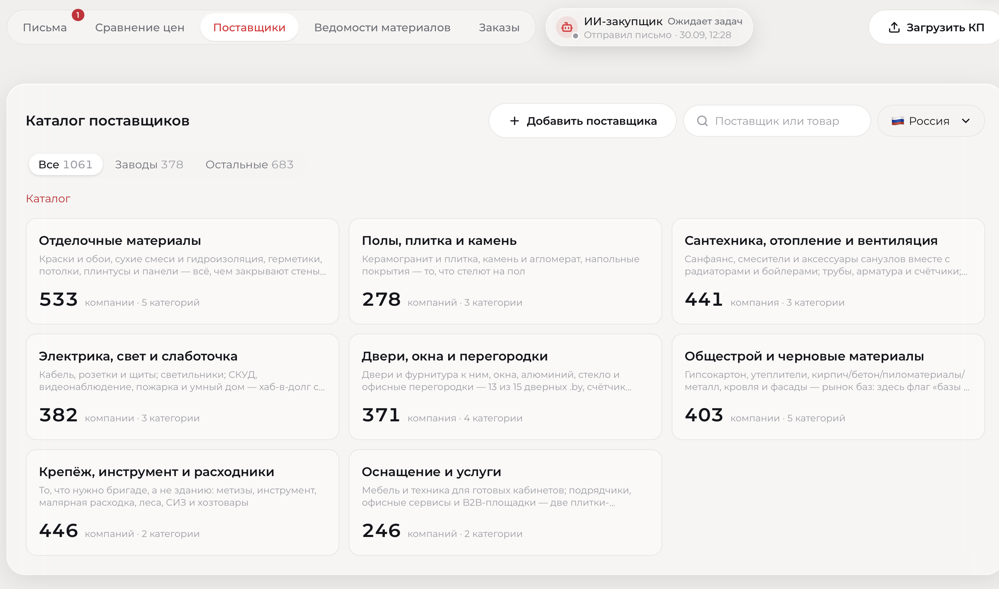
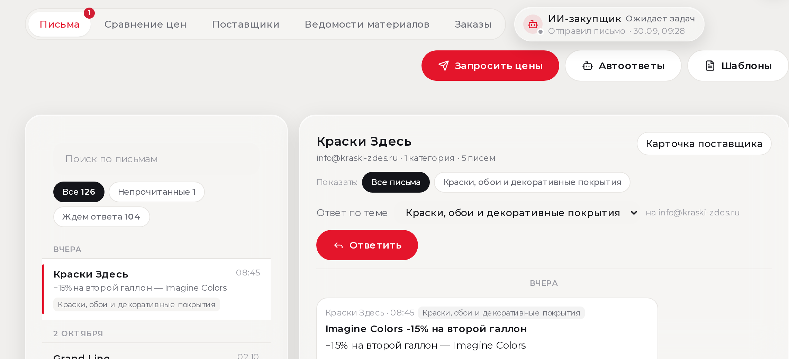
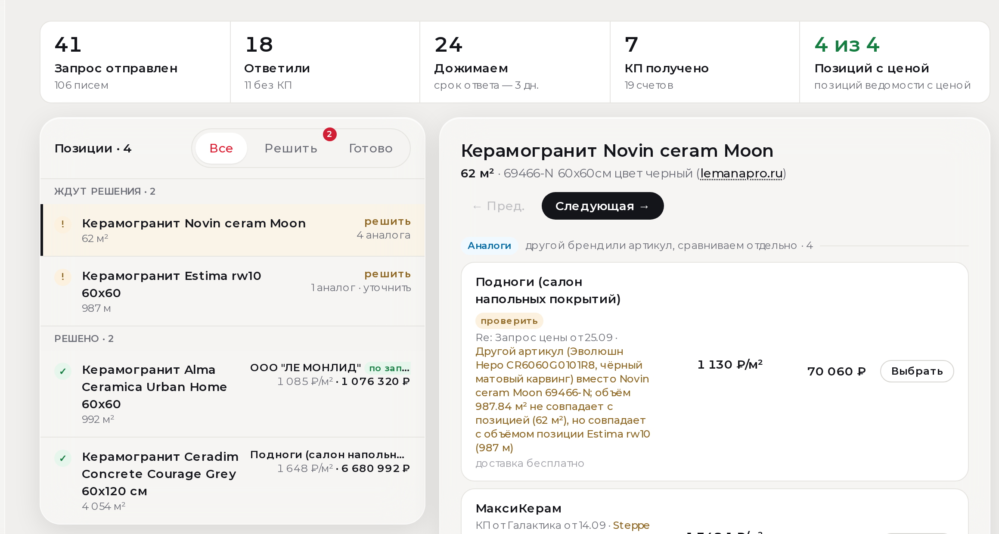
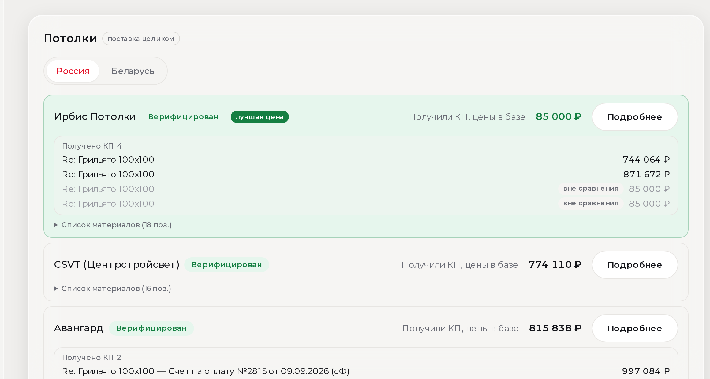
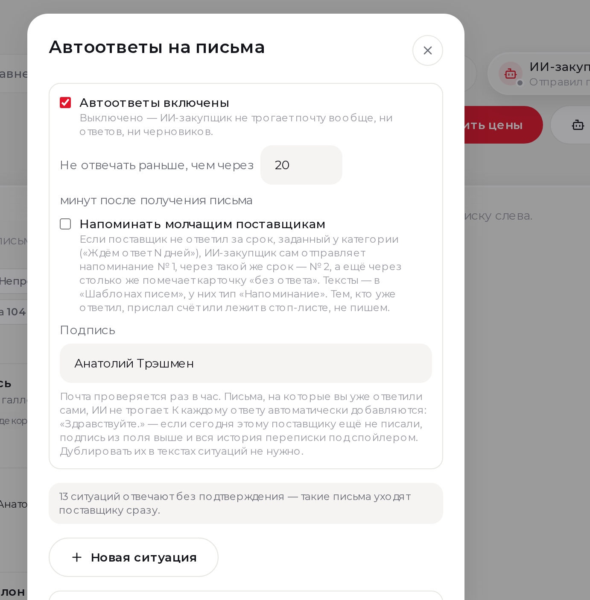

Умный модуль закупок стройматериалов
Запрашивает цены по рынку, разбирает счета и письма, сравнивает предложения и оставляет закупщику только решения.
- За 2 минуты запросить цены по базе из 1061 поставщиков (из них — 378 заводы)
- Автоматически разобрать 50% писем и 100% счетов
- Сравнить цены и подсветить лучшую
- Помочь выбрать между оригиналом и аналогом
- Заказать поставку материалов на объект

Каталог поставщиков · 1061 · 378 заводов
Одна цепочка — от ведомости до заказа
Система закрывает рутину. Оператор принимает решения там, где нужна ответственность.
Не поиск поставщика — а лучшая цена на рынке
Оператор не ищет контакты и не сводит Excel — выбирает из готовой таблицы рынка.
Запрос сразу по всей релевантной базе
- База дилеров и заводов по всем категориям стройматериалов
- Поставщик виден в каждой категории, где реально торгует
- Один клик — запрос цен по всей релевантной выборке
- Авторазбор счетов и писем с ценами

Живая переписка · «Краски Здесь» · Imagine Colors
Сравнение счетов: оригинал отдельно, аналог отдельно
Система не смешивает «то, что просили» с заменами. Спорные позиции помечает на уточнение.

Краски · Tikkurila / Dulux · 19 запросов · 12 КП · 5 из 5 позиций с ценой

Керамогранит · 41 запрос · 106 писем · 7 КП · аналоги и уточнения
ИИ-закупщик и два режима сравнения
Типовую переписку закрывает бот. Сравнение умеет и построчный тендер, и закупку комплектом.
Плитка, краски, смеси
Каждая строка ведомости сравнивается отдельно. Берём лучшую цену у разных поставщиков.
Грильято и комплекты
Несущие, направляющие, подвесы — одним лотом. Сравниваем КП целиком, не ломая комплект.

Потолки · режим «поставка целиком» · грильято 100×100

ИИ-закупщик · 13 типовых ситуаций без участия человека
Меньше ФОТ на рутину. Больше конкуренции между поставщиками. Результат — ниже закупка материалов и выше чистая прибыль объекта.